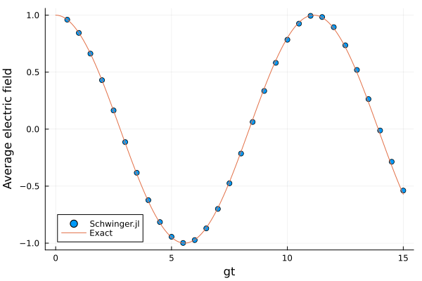

Time evolution
Schwinger.jl supports time-evolving states using all three backends:
- ED: Uses Krylov methods from
KrylovKit.jl - ITensors: Uses the time-dependent variational principle (TDVP) from
ITensorMPS.jl - MPSKit: Uses TDVP from
MPSKit.jl
The evolve function evolves a state forwards in time, and monitors any given observables. It returns a final state along with a DataFrame of the observables. For example, here is a simulation of flux unwinding.
using Schwinger, Plots
lat = Lattice(10; F = 1, L = 2, periodic = true)
gs = groundstate(Hamiltonian(lat; backend=:ED))
_, df = evolve(WilsonLoop(lat; backend=:ED) * gs, 15;
nsteps = 30,
observable = (ψ, t) -> sum(electricfields(ψ))/10
)
scatter(df.time, df.observable, xlabel = "gt", ylabel = "Average electric field", label = "Schwinger.jl")
plot!(0:.1:15, [cos(t/√(π)) for t in 0:.1:15], label = "Exact")
Schwinger.evolve — Function
evolve(state::EDState, t::Real; nsteps::Int = 1, tol = 1E-12, observable = nothing, kwargs...)Evolve an exact diagonalization state by time t using matrix exponentiation.
Arguments
state::EDState: The state to evolve.t::Real: The time to evolve by.nsteps::Int = 1: Number of time steps to divide the evolution into.tol = 1E-12: Tolerance for the matrix exponentiation.observable::Union{Nothing,Function,Dict} = nothing: Observable(s) to monitor during evolution. Can be a single function(state, t) -> valueor a dictionary of name => function pairs.
Returns
EDState: The evolved state.obs: Observer object containing the history of observables and metadata.
Examples
evolved_state, obs = evolve(state, 1.0; nsteps=10, observable=s->energy(s))evolve(state::ITensorState, t::Real; nsteps::Int = 1, observable = nothing, kwargs...)Evolve an ITensor MPS state by real time t using TDVP.
Arguments
state::ITensorState: The state to evolve.t::Real: The time to evolve by (multiplied by -im, i.e. real-time evolution exp(-iHt)).nsteps::Int = 1: Number of time steps for the TDVP algorithm.maxlinkdim::Union{Nothing,Int} = nothing: Maximum bond dimension to keep during the evolution (forwarded to ITensorMPStdvpasmaxdim).observable::Union{Nothing,Function,Dict} = nothing: Observable(s) to monitor during evolution. Can be a single function(state, t) -> valueor a dictionary of name => function pairs.kwargs...: Additional keyword arguments passed to the TDVP algorithm.
Returns
ITensorState: The evolved state.obs: Observer object containing the history of observables and metadata.
Notes
- Uses ITensors.jl TDVP algorithm.
- Time is tracked as real values (divided by -im) in the observer.
evolve(state::MPSKitState, t::Real; nsteps::Int = 1, two_site = false,
maxlinkdim = nothing, trscheme = nothing, observable = nothing, kwargs...)Evolve an MPSKit MPS state by real time t using MPSKit's TDVP algorithm.
Arguments
state::MPSKitState: The state to evolve.t::Real: The time to evolve by.nsteps::Int = 1: Number of time steps to divide the evolution into.two_site::Bool = false: Use the two-site integrator (TDVP2) instead of the single-siteTDVP. Two-site updates let the bond dimension grow and be truncated during the evolution (needed e.g. when the initial state has a small bond dimension or when entanglement grows); single-siteTDVPpreserves the bond dimension of the input state exactly.maxlinkdim::Union{Nothing,Int} = nothing: Maximum bond dimension to keep at each two-site truncation. Only used whentwo_site = true. If bothmaxlinkdimandtrschemearenothing, no truncation is applied.trscheme = nothing: A full TensorKit truncation scheme (e.g.trunctol(; rtol = 1e-10)), taking precedence overmaxlinkdim. Only used whentwo_site = true.observable::Union{Nothing,Function,Dict} = nothing: Observable(s) to monitor. A single function(state, t) -> value, or a dictionary of name => function.checkpoint::Union{Nothing,Function} = nothing: if given, called ascheckpoint(state, current_time, step, observer)everycheckpoint_everysteps. Theobservercarries the full history accumulated so far, so a single (overwritten) file can hold both the latest wavefunction and the whole trajectory for resuming/inspection.checkpoint_every::Int = 1: how often (in steps) to invokecheckpoint.grow::Union{Nothing,Bool,Function} = nothing: adaptively grow the window during evolution (only valid for aWindowMPS-backed state — throws otherwise). After each step the callback(state) -> (left, right)decides how many vacuum sites to splice onto each boundary (seegrow_window); returning(0, 0)leaves the window unchanged. Passtrueto use the default condition (window_growth_condition: grow a side when the energy density near that boundary exceeds the vacuum by a threshold), or supply your own callback.nothing/falsedisables growth.kwargs...: Additional keyword arguments forwarded toMPSKit.timestep.
Returns
MPSKitState: The evolved state.obs: Observer object containing the history of observables and metadata.
Adaptive window growth
When time-evolving a quasiparticle wavepacket on an infinite background (a WindowMPS), the grow keyword of evolve can adaptively extend the finite window so a moving or spreading excitation never reaches the boundary. Vacuum sites are spliced onto the window from the infinite environments; the evolved content and norm are preserved exactly. The default condition grows a side whenever the energy density near that boundary exceeds the vacuum by a threshold, but any callback (state) -> (left, right) may be supplied.
Schwinger.grow_window — Function
grow_window(state::MPSKitState; left = 0, right = 0)Grow a WindowMPS-backed wavepacket state by splicing extra vacuum sites onto its window: left sites drawn from the left environment (left_gs.AL) and right sites drawn from the right environment (right_gs.AR). The physical (evolved) content of the existing window is preserved exactly — the new sites are exact vacuum, and the isometric padding tensors leave the norm unchanged. Returns a new MPSKitState; the original is untouched.
The window must remain aligned to the background unit cell, so left/right must each be a multiple of the corresponding environment's unit-cell length (length(left_gs) / length(right_gs), i.e. Uc = 2 for the Schwinger model). Growing shifts the window's site indices: an old site k becomes k + left.
Arguments
state::MPSKitState: aWindowMPS-backed state (throws otherwise).left::Int = 0,right::Int = 0: number of vacuum sites to prepend/append.
Schwinger.boundary_energy_excess — Function
boundary_energy_excess(state::MPSKitState; nsites = 8)Return (left, right): the maximum energy-density excess above the local vacuum within nsites of the left and right window boundaries, respectively. The vacuum reference is each wing's own infinite-vacuum energy density (left_gs/right_gs). Used by the default adaptive window-growth condition (see window_growth_condition).
The very outermost site on each side is skipped: energy_densities overwrites it with the wing vacuum energy density (it misses the bond into the wing), so it carries no signal.
Schwinger.window_growth_condition — Function
window_growth_condition(; nsites = 8, threshold = 1e-3, growth = 2*length(left_gs))Build the default callback for adaptive window growth during evolve. The returned function maps a WindowMPS state to (left, right), the number of vacuum sites to splice on each side this step: the window grows on a side whenever the energy density anywhere within nsites of that boundary exceeds the local vacuum by more than threshold (signalling that the wavepacket has reached the edge). Each triggered side grows by growth sites (default: one background unit cell per boundary; must be a multiple of the unit-cell length).
Keyword arguments
nsites::Int = 8: how many sites in from each boundary to monitor.threshold::Real = 1e-3: energy-density excess (over vacuum) that triggers growth.growth::Int = 2: sites added to a triggered boundary (default one Schwinger unit cell).